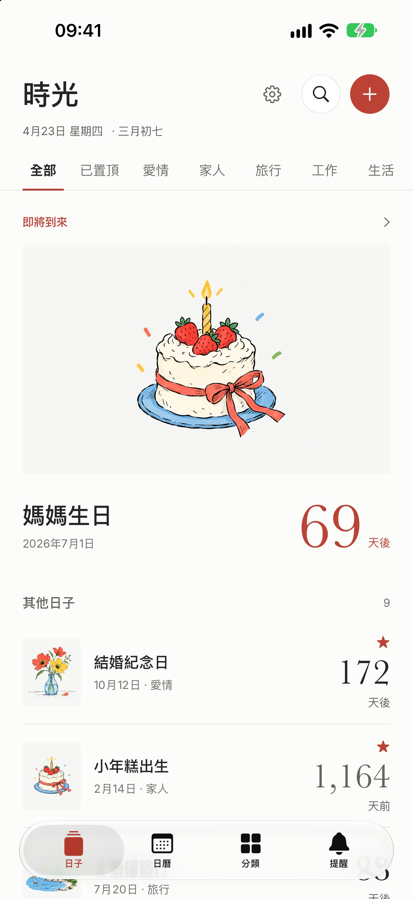
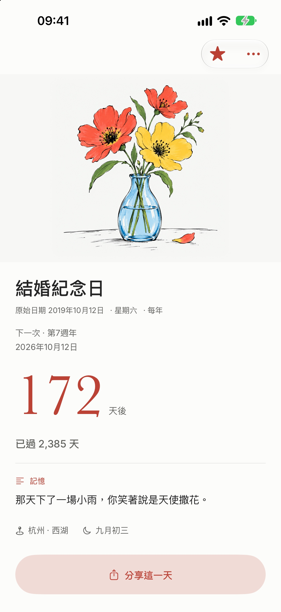
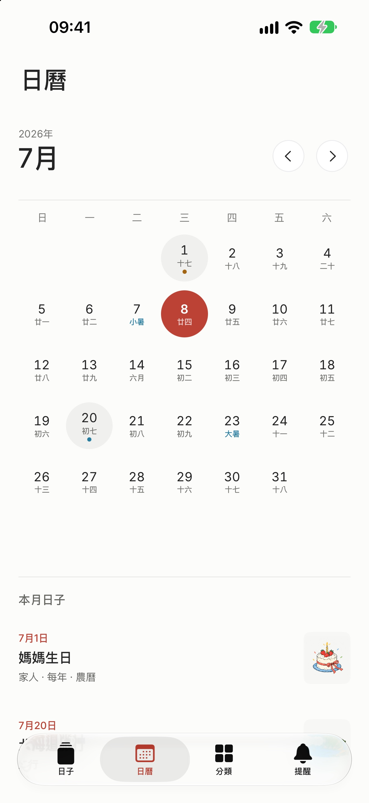
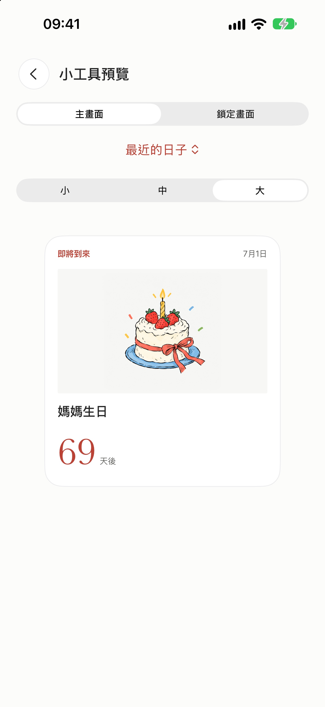
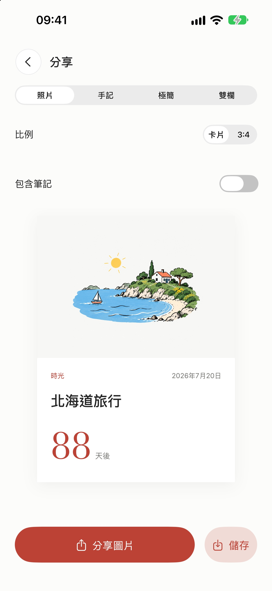
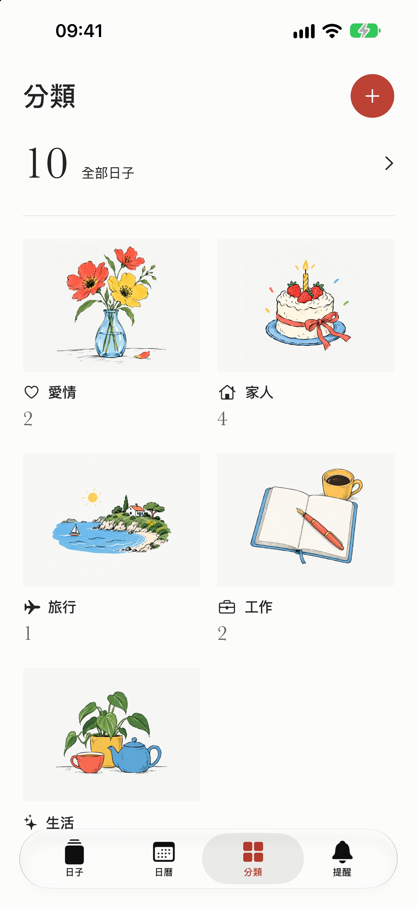

時光溫柔記住每一個重要的日子
記錄結婚紀念、寶寶出生、一場旅行、考試倒數。未來的值得期待，過去的可以回望。
即將登陸 App Store
iPhone · iOS 17 以上

試一試
離那一天，還有多少天？
填一個日子，看看它在時光裡的樣子。

結婚紀念日
2019年10月12日
—
功能
把重要的日子放在主畫面，溫柔提醒，從容相聚
-

農曆與節氣
按公曆或農曆每年重複。日曆裡標出農曆日期、二十四節氣和傳統節日，農曆支援 1900 至 2100 年。
24個節氣
-

手繪封面
為日子配一張照片，或從手繪插圖裡挑一張。新建的日子會依分類先配好封面。
12張插圖
-

貼心提醒
提前 7 天、3 天、1 天或當天提醒，時間自選。每日問候和時光回憶可以分別開啟。
7 · 3 · 1天前提醒
-

小工具
主畫面小、中、大三種尺寸，加上鎖定畫面的三種樣式。每個小工具都可以單獨選一個日子。
6種樣式
-

分享卡片
照片、手記、極簡、雙欄四種範本，可以匯出 3:4 直圖。筆記預設不會出現在圖片上。
4種範本
-

自訂分類
在愛情、家人、旅行、工作、生活之外，新增自己的分類，圖示和顏色自己挑。
5種顏色
-

iCloud 同步
日子、分類和照片透過你自己的 iCloud 在裝置間同步。誤刪的日子在這台裝置上保留 30 天，可以還原。
30天內可還原
截圖
在 iPhone 上





0